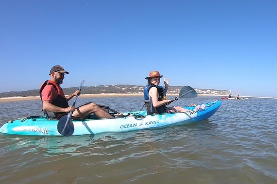

Apart from sunbathing on the pleasant beach of Foz do Arelho, there is much more to do.
Lagoon Sailing School

Located on the north shore of the Obidos Lagoon, between the villages of Foz do Arelho and Nadadouro, the Sailing School of Lagoa has been dedicated since 1997 to teaching and practicing sailing in various modalities: Windsurf, Catamaran, Kitesurf, Optimist, Paddleboarding, canoeing and water skiing and wakeboarding.
Integrated in a landscape of rare beauty, supported by an excellent water mirror, EVL has initiated and supported hundreds of practitioners of the sport, allowing them to enjoy optimum wind conditions safely.
Integrated in a landscape of rare beauty, supported by an excellent water mirror, EVL has initiated and supported hundreds of practitioners of the sport, allowing them to enjoy optimum wind conditions safely.
Intertidal - Nature and Adventure
Intertidal - Nature and Adventure provides eco-tourism and natural tourism with a scientific, historical, cultural, ethnographic and environmental component.

Trombone Jazz Bar

With the best selection of music and menu, "Trombone Jazz Bar" offers quality space with a fantastic range of jazz and blues.
Here you can find a space to relax, talk with friends and escape the outside world in this immersive experience.
Here you can find a space to relax, talk with friends and escape the outside world in this immersive experience.